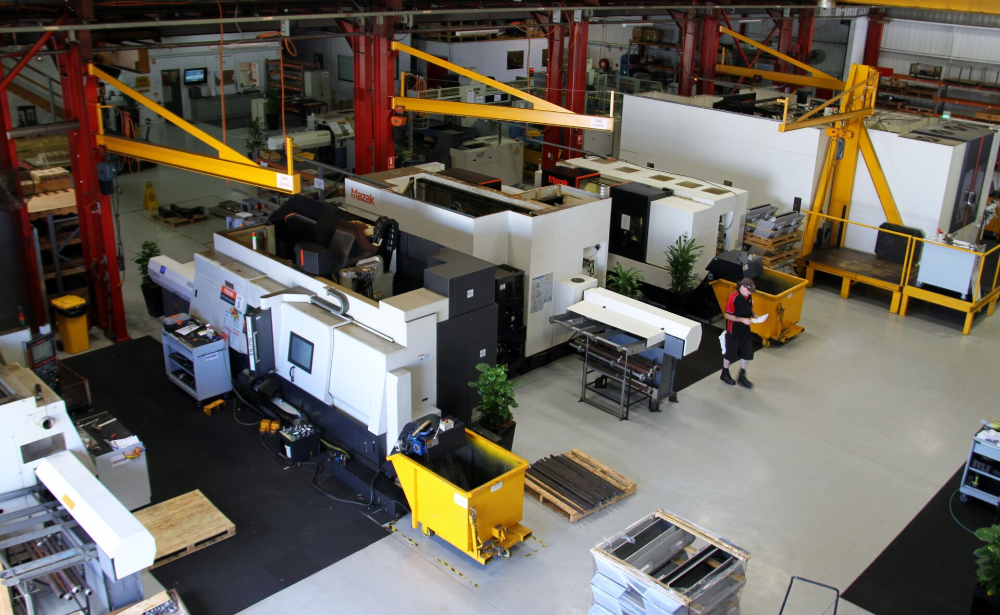

About Nupress
Precision manufacturing
in Newcastle since 1972
More than five decades of continuous manufacturing excellence, built on the foundation of precision, reliability, and the relentless pursuit of engineering quality.
Our Story
Built on decades of
manufacturing expertise
Nupress was founded in 1972 in Newcastle, NSW — a city with deep roots in industrial manufacturing and engineering excellence. What began as a precision engineering workshop has evolved over five decades into a multi-division advanced manufacturing company serving Australia's most demanding industries.
Today, our Cardiff facility houses an extensive fleet of 5-axis CNC machining centres, turning centres, and quality inspection equipment operating under AS9100D and ISO 9001:2015 certified quality management systems.
Across six specialist divisions — Aerospace & Defence, Facades, Medical, Mining & Minerals, Energy, and General Engineering — Nupress delivers components that must perform without compromise in applications where failure is not an option.

What We Stand For
Our Values
Three principles guide everything we do at Nupress — from how we machine a single component to how we partner with our clients.
Precision
We pursue accuracy in everything — in our machining tolerances, in our quality processes, in our documentation, and in our communication. Precision is not just a specification; it's a culture.
Reliability
Our clients depend on us delivering on time, to specification, without excuses. Reliability is earned through consistent execution — and we've been building that trust since 1972.
Innovation
We continuously invest in equipment, training, and engineering capability to stay at the forefront of manufacturing technology — bringing innovation to every project we take on.
Our Facility
Cardiff, Newcastle NSW
Our Cardiff facility brings together machining, quality inspection, and engineering under one roof — giving us the end-to-end control that precision manufacturing demands.


Ready to work with us?
Submit an RFQ or reach out to our team directly.